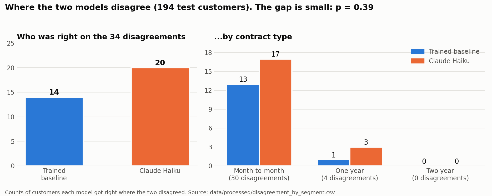

CASE STUDY /
I asked an AI to do a trained model's job. Here is what it got right and wrong
A zero-shot LLM and a trained logistic regression scored about the same on 194 telecom customers. The more informative result was where they disagreed, and whether the LLM's reasons held up.
- 194 customers evaluated
- 34 predictions that differed
- 20 vs 14 correct, LLM vs baseline
- p = 0.39 sign test
Terms used in this post
- Churn
- a customer ending their service.
- Zero-shot
- the model receives the task description but no worked examples.
- Logistic regression
- a standard classification model that estimates the probability of an outcome.
- Precision
- of the customers flagged as leaving, the share who actually left.
- Recall
- of the customers who actually left, the share that were flagged.
- F1
- the harmonic mean of precision and recall.
- Missed leaver (false negative)
- a customer who left but was predicted to stay.
- False alarm (false positive)
- a customer who stayed but was predicted to leave.
- Tenure
- the number of months a customer has been with the company.
- Sign test
- a paired test that compares two classifiers using only the cases where they disagree, counting which model was right each time.
The question: can a prompt replace a trained model?
Churn prediction is usually a supervised learning problem. This post tests whether a prompt can do the same job.
Customer churn, the loss of a customer to cancellation, is a standard prediction problem. The usual approach is supervised learning: fit a model on historical customers whose outcomes are known, then score new customers with it. I wanted to test a different approach. Could a large language model (LLM) that has never seen this dataset predict churn from a short written description of each customer?
The comparison has a practical side. A trained model requires labeled data, feature preparation and maintenance. A prompt requires none of those. If the prompt performs about as well, the cost of getting started drops. If it does not, the way it fails shows what training provides.
Method: a logistic regression baseline against a zero-shot LLM
Both models were scored on the same held-out customers.
Method at a glance
- Data
- IBM Telco Customer Churn sample dataset, 7,043 customers, no real people
- Split
- 5,634 training customers and 1,409 test customers
- Baseline
- logistic regression, adjusted to weight customers who leave more heavily
- LLM
- Claude Haiku, zero-shot (no examples, no training on this data)
- Model input
- a plain-English summary of each customer: contract type, tenure in months, monthly charge, online security and tech support, and payment method
- Model output
- a prediction (leave or stay) and a one-sentence reason
- LLM evaluation sample
- 200 random test customers, 194 valid responses, 6 excluded for wrong format
The baseline is a logistic regression, a standard and easily explained classifier, adjusted to weight customers who leave more heavily. For the LLM, I used Claude Haiku with no examples and no training on this data, an approach called zero-shot prompting. Each customer was converted into a plain-English summary covering contract type, tenure in months, monthly charge, online security and tech support, and payment method. The model was asked to predict whether the customer would leave and to give a one-sentence reason.
API calls cost money, so I evaluated the LLM on a random sample of 200 test customers rather than all 1,409. Of those 200, 194 responses followed the required format. Six did not and are excluded, so every comparison below uses the same 194 customers, 54 of whom actually left.
Results: similar scores, different errors
Aggregate metrics were close. The counts behind them were not identical.
| Model | Accuracy | Precision | Recall | F1 | Missed leavers | False alarms |
|---|---|---|---|---|---|---|
| Logistic regression (trained baseline) | 0.742 | 0.525 | 0.778 | 0.627 | 12 | 38 |
| Claude Haiku (AI, no training) | 0.773 | 0.569 | 0.759 | 0.651 | 13 | 31 |
The LLM scores slightly higher on accuracy, precision and F1, and slightly lower on recall. The differences are small for a sample of this size. The baseline produced more false alarms (38 against 31) and missed one fewer leaver (12 against 13).
Counts behind the table. Each box covers the same 194 customers: 54 who left and 140 who stayed.
| correctly flagged leavers 42 | missed leavers 12 |
| false alarms 38 | correctly cleared 102 |
| correctly flagged leavers 41 | missed leavers 13 |
| false alarms 31 | correctly cleared 109 |
I also compared the models with a cost-weighted measure in which a missed leaver counts five times as much as a false alarm, since losing a customer usually costs more than a wasted discount. On that measure the two are almost tied (0.761 vs 0.766).
Where the models disagree
The two models matched on most customers. The 34 disagreements are the informative cases.
The two models gave the same prediction for 160 of the 194 customers (82.5 percent). The informative part is the other 34. In those, the LLM was correct 20 times and the baseline 14 times.
To check whether that split could be chance, I used a sign test, which compares the two models using only the cases where they disagree and counts which one was right each time. It gives p = 0.39. A difference this size would appear by chance about four times in ten, so the data do not support a claim that the LLM is better. They do not support a claim that it is worse either.
I cannot say the AI is better. I can say it is not obviously worse.
Thirty of the 34 disagreements were customers on month-to-month contracts.

The LLM behaved like a tenure heuristic
Its predictions followed one feature more closely than any individual customer.
Tenure is the number of months a customer has been with the company. The LLM flagged 91 percent of customers with 12 months or less as likely to leave, and 16 percent of customers with more than 12 months. That pattern resembles a one-feature rule: new customers leave. It is a reasonable heuristic, but a one-feature rule is not the same as reasoning about each customer.
Correct predictions with unreliable reasons
Accuracy scores the prediction. It does not score the explanation.
Accuracy measures the prediction, not the explanation. The reason the LLM gave is text generated alongside the answer, not a record of how the prediction was produced, so it needs to be checked separately.
I read five of the LLM's written reasons against the customers' actual records, choosing cases where the two models were right or wrong in different combinations. In all five, the facts the LLM quoted were true. The logic held up in one. In the other four, the reason was only partly sound: two treated no internet service as a churn risk, and two let long tenure outweigh several risk factors (fiber optic, electronic-check payment, high monthly charges). One prediction was right for a flawed reason, so a correct prediction does not mean a sound explanation. Five hand-picked examples show patterns but do not represent all 194 customers.
One pattern recurred. In 7 of the LLM's reasons, it treated having no internet service as a sign of risk. In this data those customers leave rarely (about 7 percent), and 5 of those 7 customers actually stayed. The reasons were stated with confidence, and in those cases the stated risk factor pointed the wrong way.
What the results do and do not show
The sample is small, so the claims need to stay small too.
The results show
- On this sample, the LLM and the baseline performed about the same in aggregate.
- Their errors differ, and most of the differences involve month-to-month customers.
- The LLM's predictions followed tenure closely.
- A correct prediction does not guarantee a sound reason.
The results do not show
- That the LLM is better or worse than the baseline.
- That the result holds for another prompt, model, sample size or dataset.
- That the LLM's written reasons describe how it actually reached its prediction.
This is a small test: 194 customers, one AI model, one prompt, one dataset. A different prompt, a larger sample or a different model could change the result. An early pilot also failed because my API account had no credits. I kept those logs and documented them in the project instead of removing them.
Next steps
Three changes would make the comparison stronger.
A stronger baseline, an analysis of which customer details drive each model's predictions, and more customers if the budget allows.
Code and demo
The repository and the demo are public.
Reproduce it
The repository contains the notebooks for data inspection, the baseline and the LLM experiment, the saved results, and the demo app. The demo lets you browse the disagreements and the LLM's written reasons, and score a customer you describe with the baseline.
The demo may take about a minute to wake up.